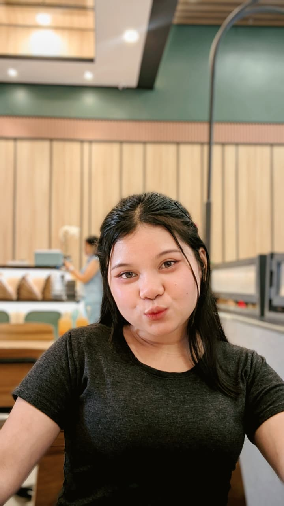

Selamat Datang
Halo, Saya Frida Carolina Br Purba
Mahasiswi Sistem Informasi / Teknik Informatika di Universitas Advent Indonesia. Bersemangat dalam pengembangan web, pengolahan data, dan eksplorasi teknologi baru.

Sekilas Tentang Website Saya
Latar Belakang Akademis
Informasi detail mengenai identitas, program studi, dan riwayat IPK semester ganjil & genap 2025/2026.
Galeri Liburan
Dokumentasi foto perjalanan dan pengalaman berkesan yang dirancang menggunakan tata letak CSS Flexbox.
Komunikasi Langsung
Formulir kontak interaktif dan tautan media sosial untuk berkolaborasi atau bertukar ide.